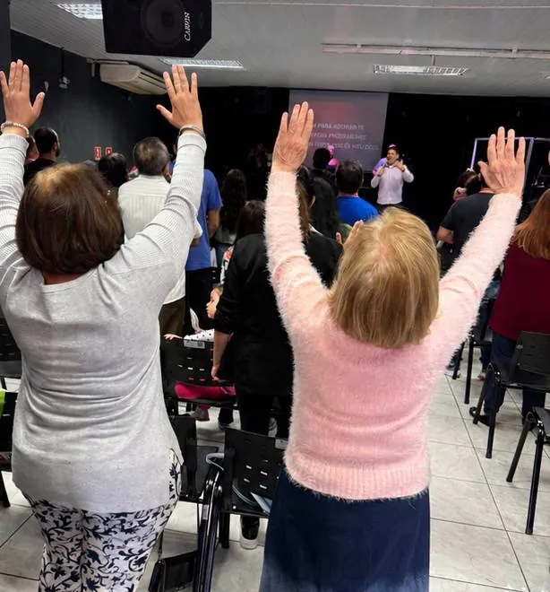
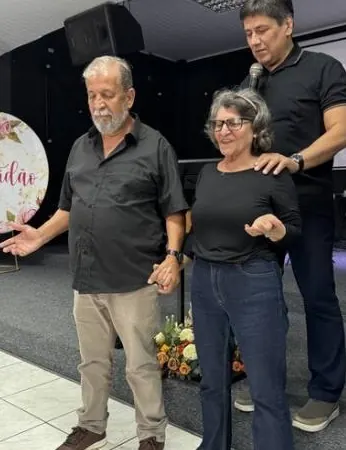
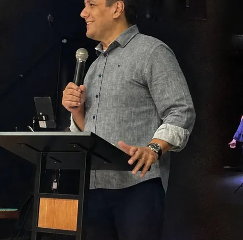
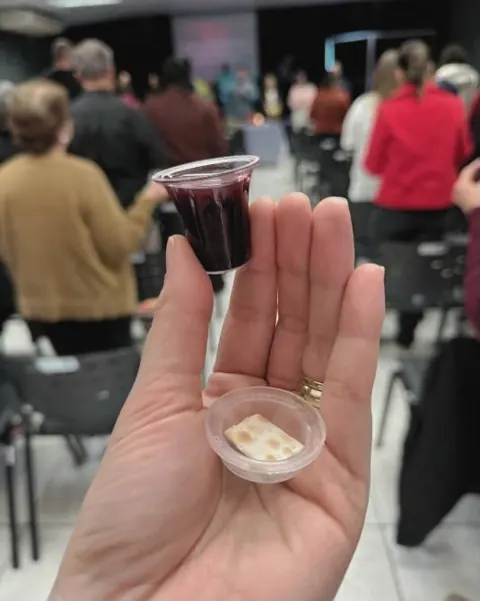
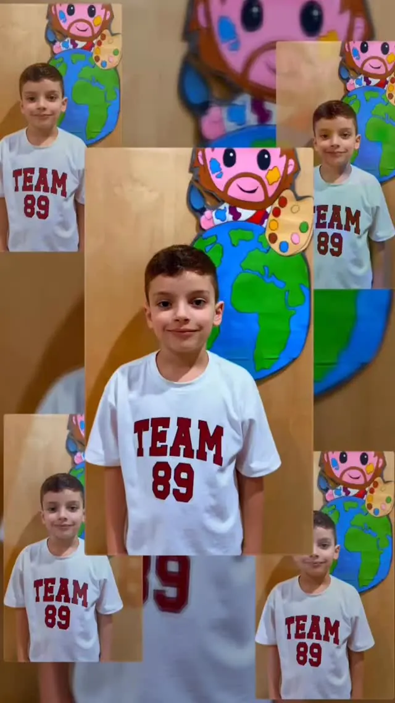
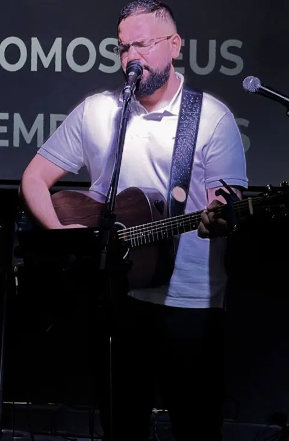
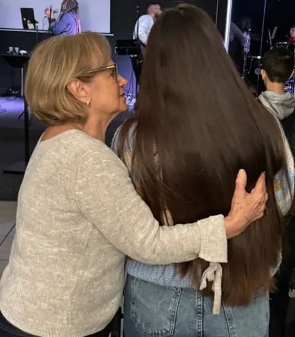
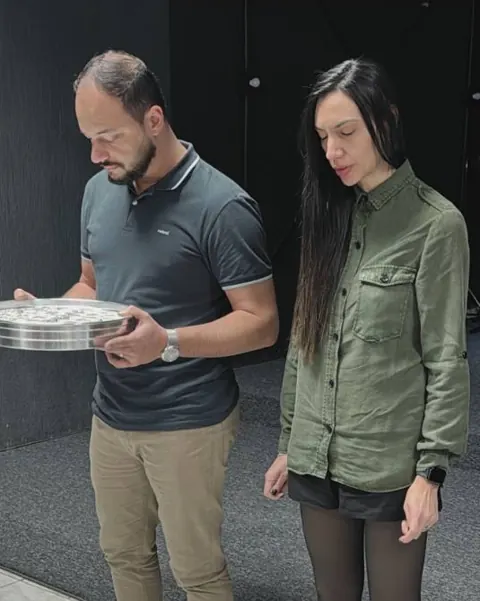
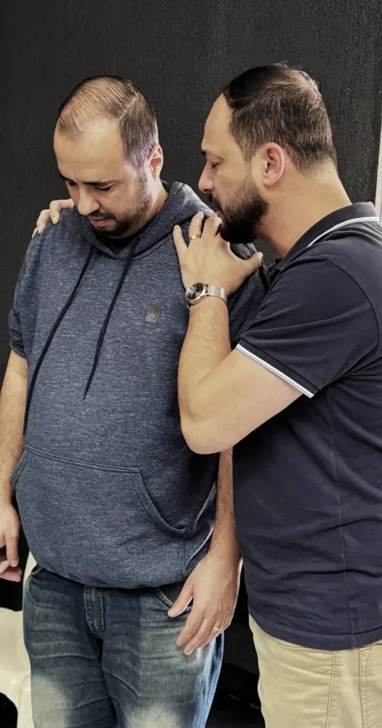
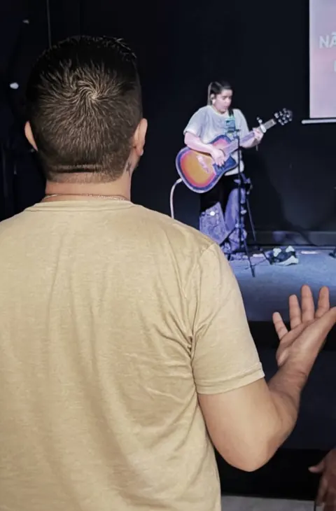

Espírito Santo
Cremos que o Espírito Santo é a fonte de vida e nos guia em cada passo.
Dom 9h · 10h — Ter 9h — Qua 20h
Nada quebrado, Nada faltando, Nada fora do lugar.
Ao vivo agora
Assista ao culto de onde você estiver. Entre, ore com a gente e celebre junto com a nossa casa.
Nossa semana
Toda semana abrimos as portas para orar, adorar e ouvir a Palavra. Chegue como estiver: tem lugar para você.

Dízimos e ofertas
“Cada um dê conforme determinou em seu coração, não com pesar nem por obrigação, pois Deus ama quem dá com alegria.”
2 Coríntios 9:7
Sua generosidade sustenta a obra, o cuidado com as famílias e o evangelismo na Freguesia do Ó. Obrigado por semear com a gente.
Aponte a câmera do app do seu banco
Confira o nome “Igreja Casa Comunhão e Vida” antes de confirmar.
Nossa história
Há vinte e cinco anos começamos nossa jornada na casa da Pastora Marli, como uma célula. Crescemos, e o Senhor nos trouxe para o endereço onde estamos desde então. Aqui vivemos muitas fases que nos aperfeiçoaram e nos firmaram como igreja no nosso bairro.
“Venha nos visitar. Será um prazer te abraçar e celebrar ao Senhor junto com você.”
Pr. Luís Fernando e Pra. Patrícia

Tudo começou na casa da Pastora Marli, com poucas pessoas reunidas em oração.

O Senhor nos trouxe ao endereço onde estamos até hoje, na Freguesia do Ó.

Seguimos firmes no chamado de ser uma Casa de Oração para a nossa região.
Cremos que o Espírito Santo é a fonte de vida e nos guia em cada passo.
Jesus Cristo é o Centro, o Pão Vivo que desceu do céu e restaurou a nossa fé.
Oramos por um tempo de avivamento contínuo para crescer, prosperar e avançar.
Buscamos o Reino de Deus em primeiro lugar, e o Senhor tem cuidado de nós.
Ministérios
Da criança ao casal, dos jovens às mulheres: há uma família esperando por você em cada fase da vida.

Ministério Infantil
Ensino bíblico criativo e seguro para as crianças, com cuidado e alegria.

Jovens
Comunhão, adoração e propósito para a juventude.

Encontro de Mulheres
Palavra, cuidado e gratidão entre mulheres de todas as idades.

Encontro de Casais
Casamentos edificados na rocha, com Cristo no centro do lar.

Casa de Oração
Toda terça, às 9h, oramos pela igreja, pelas famílias e pela cidade.

Conferência anual
Um encontro por ano para toda a igreja. Edições de 2022, 2023, 2024 e 2025.
Mensagens
Assista às mensagens aqui mesmo no site. Escolha outra na lista e ela começa no player.
Mensagem mais recente
Mensagens recentes 7
Vida em comunidade
Acompanhe
Avisos, fotos e mensagens do dia a dia da igreja. Acompanhe pelo Facebook, YouTube e Instagram.
Agenda
Atualizada automaticamente com a programação semanal da igreja.
Visite-nos
Endereço
Av. Elísio Teixeira Leite, 73
Freguesia do Ó · São Paulo/SP · CEP 02801-000